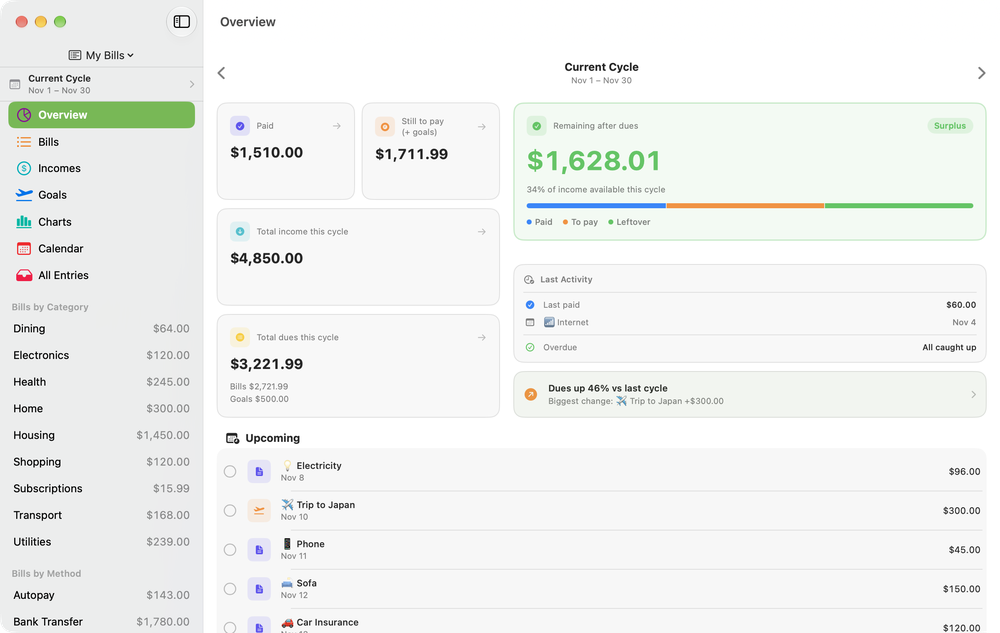
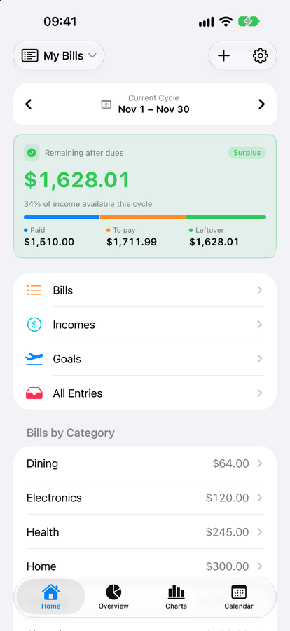
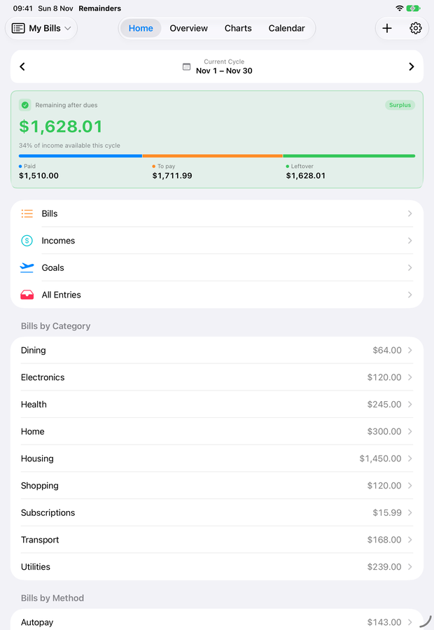

Remainders
Support & Privacy



Need help or have a question? Email remainders.support@icloud.com and we'll get back to you.
Remainders is a bill tracker and budget planner: bills, incomes, savings goals, credit cards and installments — and what's left before payday. Your data lives in your own private iCloud. Below are answers to the most common questions.
Frequently Asked Questions
How does Remainders store my data?
In Remainders' own space in your private iCloud (Apple's CloudKit), synced between your iPhone, iPad and Mac signed in to the same Apple Account. There's no account to create and no server of ours: only you can see your data — not even the developer. Without iCloud, everything stays on the device.
Is my financial data private?
Yes. Remainders collects nothing: no login, no analytics, no advertising, no third‑party services. Your data only leaves the device through your own iCloud sync, managed by Apple.
I used Remainders 1.x with a Reminders list. What happens to it?
When you update, Remainders offers to move your list in — everything is checked month by month against Reminders. Reminders is only read; nothing there changes. You can also do it later in Settings → Legacy → Import from Reminders…. Once you're happy, delete the old list (from the same screen) so Reminders stops sending its own alerts. Update Remainders on all your devices: 1.x keeps using Reminders and won't see 2.0's data.
Why would the app ask for access to Reminders?
Only to read a 1.x list once and move it in — and only when you choose to. New users are never asked. You can revoke it anytime in Settings → Privacy & Security → Reminders.
How do billing cycles work?
Set your cycle once: monthly on your payday, or every week, two weeks or any number of days. Every bill, income and goal deposit falls in the cycle of its date, and Home shows what remains after this cycle's dues. Each budget has its own cycle.
A bill's amount changes every month (electricity, water). What do I do?
Give it an estimate. When the real bill arrives, long‑press it (right‑click on a Mac) → Mark as Paid with Another Amount…. That month takes the real value; the next ones keep the estimate.
Why are some rows dimmed? Can I pay, edit or skip a future date?
Dimmed rows are later dates of repeating entries. You can pay one ahead, edit it (Only This Date or This and Future Dates), or skip just that date — up to four years ahead.
How do credit cards work?
＋ → New Card…, set its closing and due day, then pick it in Method when you add a purchase. Purchases, installments and subscriptions go in one statement per month, with one notification on its due date. Pay line by line or the whole statement. Long‑press a statement (right‑click on a Mac) to delete it: its purchases go, subscriptions skip that month, installment plans stay.
What about store payment plans and “Pay in 4”?
＋ → New Installment Plan: monthly or every two weeks, with the first one already paid if you paid it at the checkout. Use Pay Ahead… to pay future installments today: they count in the current cycle (on a card, in the open statement).
How do savings goals work?
Set a target and a regular deposit. Each deposit is a row in your cycle like a bill, so saving is part of the budget; check it off and the goal's progress grows. Add Extra records a one‑off deposit. The goal's balance is your starting balance plus every deposit made.
Can I keep separate budgets?
Yes. The budget menu at the top creates, renames and deletes budgets — for home, a trip or a business — each with its own cycle and currency. The widget and Siri follow the budget on show.
Where can I see all my bills, incomes and goals at once?
In All Entries: History (paid, received, deposited), This Cycle (still open, overdue included) and Upcoming (everything after this cycle). Use Search or the Filter to find anything, and ⋯ → Select Items to act on several at once.
How do filters and search work?
Tap or click Filter and pick options in each section (recurrence, category, method, status, date…). Several options in one section show any of them; options in different sections must all match. Switch to Hide to leave your picks out instead — a quick what‑if, like your month without subscriptions. While you type in Search, matching filters are suggested and tapping one adds it as a chip. The charts follow your filters too.
What does Forecast count?
Everything still to come from today until the end of the window you pick (3 months to 4 years): unpaid bills, goal deposits and incomes. The Net Balance chart starts from this cycle's balance so far and adds each cycle's incomes minus bills and deposits. Filter and Search narrow both the list and the chart.
When do notifications arrive?
At 9:00 AM on the due date, or at the time you set per entry, plus an optional earlier alert. Mark as Paid right from the notification. Check Settings → Status if they don't arrive.
Does it work on all my devices?
Yes — iPhone, iPad and Mac, through your iCloud, with one purchase. Settings → Status shows whether iCloud sync is on; Check Again asks iCloud again.
How do I back up my data?
Settings → Backup → Export Backup… saves every budget in one CSV file (keep it somewhere private, like Files or iCloud Drive). Import Backup… restores it; what's already there is skipped.
What happens if I sign out of iCloud on a device?
iOS and macOS remove the iCloud‑synced data from that device when you sign out (your budgets stay in iCloud and on your other devices, and come back when you sign in again). If you plan to sign out for good, export a backup first.
My amounts changed format after I switched region.
Dates and number formatting follow your device Region; the currency follows each budget (Settings → Budget → Currency). Your values are unchanged, only the formatting.
The widget looks out of date.
Open Remainders once — it refreshes the widget. Widgets also update on their own during the day.
Can I lock the app with Face ID?
Yes, with iOS: touch and hold the Remainders icon → Require Face ID.
What's New
Version 2.0.1 — November 2026
Fixes a crash when opening the app from a notification (iPhone and iPad); the Mac version is kept in step.
Version 2.0 — November 2026
A brand‑new Remainders: redesigned, much faster, and your data now syncs through your own private iCloud instead of Apple Reminders.
- iPhone, iPad and Mac, always in sync — no account needed.
- New Home, Overview, Charts and Calendar tabs.
- Calendar: every bill, income and goal deposit on its day.
- Charts: where your money goes, and a Forecast up to four years ahead.
- Credit cards: purchases, installments and subscriptions in one monthly statement.
- Installment plans and store payment plans, with Pay Ahead.
- Pay a variable bill at its real amount; the next ones keep your estimate.
- Pay, edit or skip any future bill.
- Separate budgets for home, a trip or a business, each in its own currency.
- Filters, search, notes, and a backup you can save to Files.
- Used Remainders before? Bring your Reminders list in with one tap.
Version 1.1 — October 2026
- Optimized for iPhone Duo: unfolded, see your list and the editor side by side; folded, everything fits the outer screen — and you stay on the same screen when you fold or unfold.
- Edit bills, incomes and goals in a side panel on Mac, iPad, iPhone Duo, and Pro Max and Plus iPhones in landscape — select one to see its status, mark it paid and edit it in place, then close it with one tap or click.
- New “Where Your Income Goes” chart in Overview, showing what's left after your bills.
- More accurate Forecast: goal deposits stop once a goal is fully funded.
- Your Remainders lists now appear first when choosing a list.
- Run Diagnosis helps you check Reminders notifications.
- Siri and Shortcuts now understand Portuguese and Spanish.
- Double-click to edit on Mac, a refreshed Liquid Glass look, plus many refinements and fixes.
Version 1.0.1 — October 2026
Fixed the totals shown next to each category and payment method, which could include bills from other cycles. They now match the current cycle.
Version 1.0 — October 13, 2026
First release of Remainders for iPhone, iPad, and Mac.
Privacy Policy
Effective date: November 2026
Remainders ("the app") does not collect, store, or share any personal data.
- Where your data lives. Everything you create is stored on your device and in Remainders' own space in your personal iCloud account (Apple CloudKit, private database), governed by Apple's Privacy Policy. We have no access to it.
- No accounts, no tracking. No login, analytics, advertising, or third‑party services.
- Permissions. Notifications, to remind you of due dates. Reminders, only if you choose to move a list from Remainders 1.x — read once, never changed.
- Deleting your data. Erase a budget in Settings, or remove the app's data from iCloud (Apple Account → iCloud → Manage Storage → Remainders). Signing out of iCloud on a device removes the synced copy from that device.
- Children. The app does not knowingly collect any data from anyone, including children.
If you have any questions about privacy, contact remainders.support@icloud.com.
Disclaimer
Remainders relies on Apple's iCloud (CloudKit) to sync your data across devices and on the system to deliver notifications. These services are provided and controlled by Apple. Remainders is not responsible for data loss, sync delays or conflicts, or missed notifications caused by Apple's services or changes to iOS, iPadOS, or macOS. For anything important, keep a backup (Settings → Backup) and your own records.
Precisa de ajuda ou tem uma dúvida? Envie um e-mail para remainders.support@icloud.com e responderemos.
O Remainders é um app de controle de contas e orçamento: contas, receitas, metas de economia, cartões de crédito e parcelas — e quanto sobra antes do pagamento. Seus dados ficam no seu próprio iCloud privado. Abaixo estão as respostas para as perguntas mais comuns.
Perguntas frequentes
Como o Remainders guarda meus dados?
Num espaço próprio do Remainders dentro do seu iCloud privado (o CloudKit da Apple), sincronizado entre seu iPhone, iPad e Mac conectados à mesma Conta Apple. Não há conta para criar nem servidor nosso: só você vê seus dados — nem o desenvolvedor vê. Sem iCloud, tudo fica no aparelho.
Meus dados financeiros são privados?
Sim. O Remainders não coleta nada: sem login, sem análise de uso, sem publicidade, sem serviços de terceiros. Seus dados só saem do aparelho pela sincronização do seu próprio iCloud, administrada pela Apple.
Eu usava o Remainders 1.x com uma lista do Lembretes. O que acontece com ela?
Ao atualizar, o Remainders oferece trazer sua lista — tudo é conferido mês a mês com o Lembretes. O Lembretes é apenas lido; nada lá muda. Você também pode fazer isso depois em Ajustes → Versões anteriores → Importar do app Lembretes…. Quando estiver satisfeito, exclua a lista antiga (na mesma tela) para o Lembretes parar de enviar os próprios avisos. Atualize o Remainders em todos os seus aparelhos: o 1.x continua usando o Lembretes e não vê os dados do 2.0.
Por que o app pediria acesso ao Lembretes?
Só para ler uma lista do 1.x uma vez e trazê-la — e só quando você escolher. Usuários novos nunca são perguntados. Você pode revogar o acesso quando quiser em Ajustes → Privacidade e Segurança → Lembretes.
Como funcionam os ciclos de cobrança?
Defina seu ciclo uma vez: mensal no dia do pagamento, ou semanal, quinzenal ou a cada quantos dias quiser. Cada conta, receita e depósito de meta cai no ciclo da sua data, e o Início mostra quanto sobra depois das contas do ciclo. Cada orçamento tem seu próprio ciclo.
O valor de uma conta muda todo mês (luz, água). O que eu faço?
Dê a ela uma estimativa. Quando a conta real chegar, toque e segure nela (clique com o botão direito no Mac) → Marcar como paga com outro valor…. Aquele mês fica com o valor real; os próximos mantêm a estimativa.
Por que algumas linhas ficam esmaecidas? Posso pagar, editar ou pular uma data futura?
As linhas esmaecidas são as próximas datas de lançamentos que se repetem. Você pode antecipar uma, editá-la (Só esta data ou Esta e as próximas datas) ou pular só aquela data — até quatro anos à frente.
Como funcionam os cartões de crédito?
＋ → Novo cartão…, defina o dia de fechamento e de vencimento, e escolha-o em Método ao lançar uma compra. Compras, parcelas e assinaturas entram numa fatura por mês, com uma notificação no vencimento. Pague item por item ou a fatura inteira. Toque e segure uma fatura (botão direito no Mac) para excluí-la: as compras saem, as assinaturas pulam aquele mês e os parcelamentos continuam.
E os carnês e o “pague em 4”?
＋ → Novo carnê: mensal ou a cada duas semanas, com a primeira parcela já paga se você pagou no caixa. Use Antecipar… para pagar parcelas futuras hoje: elas contam no ciclo atual (no cartão, na fatura aberta).
Como funcionam as metas de economia?
Defina um objetivo e um depósito regular. Cada depósito é uma linha do seu ciclo, como uma conta, então guardar dinheiro faz parte do orçamento; marque-o e o progresso da meta cresce. Adicionar extra registra um depósito avulso. O saldo da meta é o saldo inicial mais cada depósito feito.
Posso ter orçamentos separados?
Sim. O menu de orçamentos no topo cria, renomeia e exclui orçamentos — para a casa, uma viagem ou um negócio — cada um com seu ciclo e sua moeda. O widget e a Siri seguem o orçamento em exibição.
Onde vejo todas as minhas contas, receitas e metas de uma vez?
Em Todos os lançamentos: Histórico (pago, recebido, depositado), Este ciclo (ainda em aberto, atrasados incluídos) e Próximos (tudo depois deste ciclo). Use a busca ou o Filtro para achar qualquer coisa, e ⋯ → Selecionar itens para agir em vários de uma vez.
Como funcionam os filtros e a busca?
Toque ou clique em Filtro e escolha opções em cada seção (recorrência, categoria, método, status, data…). Várias opções numa mesma seção mostram qualquer uma delas; opções de seções diferentes precisam valer juntas. Mude para Ocultar para deixar suas escolhas de fora — um “e se” rápido, como seu mês sem assinaturas. Enquanto você digita na busca, filtros correspondentes são sugeridos e tocar num deles o adiciona como etiqueta. Os gráficos seguem seus filtros também.
O que a Previsão soma?
Tudo o que ainda vem de hoje até o fim da janela escolhida (3 meses a 4 anos): contas não pagas, depósitos de metas e receitas. O gráfico de Saldo projetado parte do saldo deste ciclo até agora e soma, ciclo a ciclo, receitas menos contas e depósitos. O Filtro e a busca restringem a lista e o gráfico.
Quando as notificações chegam?
Às 9:00 na data de vencimento, ou no horário que você definir em cada lançamento, mais um aviso antecipado opcional. Marque como paga direto na notificação. Confira Ajustes → Status se elas não chegarem.
Funciona em todos os meus aparelhos?
Sim — iPhone, iPad e Mac, pelo seu iCloud, com uma única compra. Ajustes → Status mostra se a sincronização com o iCloud está ativa; Verificar de novo consulta o iCloud outra vez.
Como faço backup dos meus dados?
Ajustes → Backup → Exportar backup… salva todos os orçamentos num único arquivo CSV (guarde-o num lugar privado, como o app Arquivos ou o iCloud Drive). Importar backup… restaura o arquivo; o que já existe é pulado.
O que acontece se eu sair do iCloud num aparelho?
O iOS e o macOS removem desse aparelho os dados sincronizados pelo iCloud quando você sai da conta (seus orçamentos continuam no iCloud e nos outros aparelhos, e voltam quando você entra de novo). Se pretende sair de vez, exporte um backup antes.
Meus valores mudaram de formato depois que troquei a região.
Datas e formato de números seguem a Região do aparelho; a moeda segue cada orçamento (Ajustes → Orçamento → Moeda). Seus valores não mudam, só a formatação.
O widget parece desatualizado.
Abra o Remainders uma vez — ele atualiza o widget. Os widgets também se atualizam sozinhos ao longo do dia.
Posso bloquear o app com o Face ID?
Sim, pelo iOS: toque e segure o ícone do Remainders → Exigir Face ID.
Novidades
Versão 2.0.1 — novembro de 2026
Corrige uma falha ao abrir o app a partir de uma notificação (iPhone e iPad); a versão para Mac é mantida alinhada.
Versão 2.0 — novembro de 2026
Um Remainders todo novo: redesenhado, muito mais rápido, e seus dados agora sincronizam pelo seu próprio iCloud privado em vez do app Lembretes.
- iPhone, iPad e Mac, sempre sincronizados — sem cadastro.
- Novas abas: Início, Visão geral, Gráficos e Calendário.
- Calendário: cada conta, receita e depósito de meta no seu dia.
- Gráficos: para onde vai seu dinheiro, e uma Previsão até quatro anos à frente.
- Cartão de crédito: compras, parcelas e assinaturas numa única fatura mensal.
- Parcelamentos e carnês, com Antecipar.
- Pague uma conta variável pelo valor real; as próximas mantêm sua estimativa.
- Pague, edite ou pule qualquer conta futura.
- Orçamentos separados para a casa, uma viagem ou um negócio, cada um na sua moeda.
- Filtros, busca, notas, e um backup que você salva no app Arquivos.
- Já usava o Remainders? Traga sua lista do Lembretes com um toque.
Versão 1.1 — outubro de 2026
- Otimizado para o iPhone Duo: aberto, veja sua lista e o editor lado a lado; fechado, tudo cabe na tela externa — e você continua na mesma tela ao dobrar ou desdobrar.
- Edite contas, receitas e metas num painel lateral no Mac, iPad, iPhone Duo e nos iPhones Pro Max e Plus na horizontal — selecione um item para ver o status, marcar como pago e editar ali mesmo, e feche com um toque ou clique.
- Novo gráfico “Para onde vai sua receita” na Visão geral, mostrando o que sobra depois das contas.
- Previsão mais precisa: os depósitos param quando a meta é atingida.
- Suas listas do Remainders aparecem primeiro ao escolher uma lista.
- O Diagnóstico ajuda a verificar as notificações do Lembretes.
- A Siri e os Atalhos agora entendem português e espanhol.
- Clique duplo para editar no Mac, visual Liquid Glass renovado, e muitos refinamentos e correções.
Versão 1.0.1 — outubro de 2026
Corrigidos os totais ao lado de cada categoria e forma de pagamento, que podiam incluir contas de outros ciclos. Agora correspondem ao ciclo atual.
Versão 1.0 — 13 de outubro de 2026
Primeira versão do Remainders para iPhone, iPad e Mac.
Política de Privacidade
Data de vigência: novembro de 2026
O Remainders (“o app”) não coleta, armazena nem compartilha nenhum dado pessoal.
- Onde seus dados ficam. Tudo o que você cria é guardado no seu aparelho e no espaço próprio do Remainders na sua conta pessoal do iCloud (Apple CloudKit, banco de dados privado), sob a Política de Privacidade da Apple. Não temos acesso a ele.
- Sem contas, sem rastreamento. Sem login, análise de uso, publicidade ou serviços de terceiros.
- Permissões. Notificações, para lembrar você dos vencimentos. Lembretes, somente se você optar por trazer uma lista do Remainders 1.x — lida uma vez, nunca alterada.
- Apagar seus dados. Apague um orçamento nos Ajustes, ou remova os dados do app do iCloud (Conta Apple → iCloud → Gerenciar armazenamento → Remainders). Sair do iCloud num aparelho remove a cópia sincronizada desse aparelho.
- Crianças. O app não coleta intencionalmente dados de ninguém, incluindo crianças.
Se tiver qualquer dúvida sobre privacidade, escreva para remainders.support@icloud.com.
Aviso legal
O Remainders depende do iCloud da Apple (CloudKit) para sincronizar seus dados entre aparelhos e do sistema para entregar notificações. Esses serviços são fornecidos e controlados pela Apple. O Remainders não se responsabiliza por perda de dados, atrasos ou conflitos de sincronização, ou notificações não entregues causados pelos serviços da Apple ou por mudanças no iOS, iPadOS ou macOS. Para qualquer coisa importante, mantenha um backup (Ajustes → Backup) e seus próprios registros.
¿Necesitas ayuda o tienes una pregunta? Escribe a remainders.support@icloud.com y te responderemos.
Remainders es una app para controlar cuentas y presupuesto: cuentas, ingresos, metas de ahorro, tarjetas de crédito y cuotas — y cuánto te queda antes del pago. Tus datos viven en tu propio iCloud privado. Abajo encontrarás respuestas a las preguntas más comunes.
Preguntas frecuentes
¿Cómo guarda Remainders mis datos?
En un espacio propio de Remainders dentro de tu iCloud privado (CloudKit de Apple), sincronizado entre tu iPhone, iPad y Mac con la misma Cuenta de Apple. No hay cuenta que crear ni servidor nuestro: solo tú ves tus datos — ni siquiera el desarrollador. Sin iCloud, todo se queda en el dispositivo.
¿Mis datos financieros son privados?
Sí. Remainders no recopila nada: sin inicio de sesión, sin analíticas, sin publicidad, sin servicios de terceros. Tus datos solo salen del dispositivo a través de la sincronización de tu propio iCloud, gestionada por Apple.
Usaba Remainders 1.x con una lista de Recordatorios. ¿Qué pasa con ella?
Al actualizar, Remainders ofrece traer tu lista — todo se comprueba mes a mes con Recordatorios. Recordatorios solo se lee; nada cambia allí. También puedes hacerlo después en Ajustes → Versiones anteriores → Importar de Recordatorios…. Cuando estés conforme, elimina la lista antigua (desde la misma pantalla) para que Recordatorios deje de enviar sus propios avisos. Actualiza Remainders en todos tus dispositivos: 1.x sigue usando Recordatorios y no ve los datos de 2.0.
¿Por qué la app pediría acceso a Recordatorios?
Solo para leer una lista de 1.x una vez y traerla — y solo cuando tú lo elijas. A los usuarios nuevos nunca se les pide. Puedes revocarlo cuando quieras en Ajustes → Privacidad y seguridad → Recordatorios.
¿Cómo funcionan los ciclos de facturación?
Define tu ciclo una vez: mensual en tu día de pago, o semanal, quincenal o cada los días que quieras. Cada cuenta, ingreso y depósito de meta cae en el ciclo de su fecha, e Inicio muestra lo que queda después de las cuentas del ciclo. Cada presupuesto tiene su propio ciclo.
El importe de una cuenta cambia cada mes (luz, agua). ¿Qué hago?
Dale una estimación. Cuando llegue la cuenta real, mantén pulsada la cuenta (clic derecho en el Mac) → Marcar como pagada con otro importe…. Ese mes toma el valor real; los siguientes mantienen la estimación.
¿Por qué algunas filas están atenuadas? ¿Puedo pagar, editar u omitir una fecha futura?
Las filas atenuadas son las próximas fechas de los movimientos que se repiten. Puedes adelantar una, editarla (Solo esta fecha o Esta y las fechas siguientes) u omitir solo esa fecha — hasta cuatro años por delante.
¿Cómo funcionan las tarjetas de crédito?
＋ → Nueva tarjeta…, define su día de cierre y de vencimiento, y elígela en Método de pago al añadir una compra. Compras, cuotas y suscripciones van a un estado de cuenta por mes, con una notificación en su vencimiento. Paga línea por línea o el estado de cuenta completo. Mantén pulsado un estado de cuenta (clic derecho en el Mac) para eliminarlo: sus compras desaparecen, las suscripciones omiten ese mes y los planes de cuotas se quedan.
¿Y los planes de pago de tiendas y el “paga en 4”?
＋ → Nuevo plan de cuotas: mensual o cada dos semanas, con la primera ya pagada si la pagaste en caja. Usa Adelantar… para pagar cuotas futuras hoy: cuentan en el ciclo actual (en una tarjeta, en el estado de cuenta abierto).
¿Cómo funcionan las metas de ahorro?
Define un objetivo y un depósito regular. Cada depósito es una fila de tu ciclo, como una cuenta, así que ahorrar forma parte del presupuesto; márcalo y el progreso de la meta crece. Añadir extra registra un depósito suelto. El saldo de la meta es el saldo inicial más cada depósito hecho.
¿Puedo tener presupuestos separados?
Sí. El menú de presupuestos de arriba crea, renombra y elimina presupuestos — para el hogar, un viaje o un negocio — cada uno con su ciclo y su moneda. El widget y Siri siguen el presupuesto en pantalla.
¿Dónde veo todas mis cuentas, ingresos y metas a la vez?
En Todos los movimientos: Historial (pagado, recibido, depositado), Este ciclo (aún abierto, vencidos incluidos) y Próximos (todo lo posterior a este ciclo). Usa la búsqueda o el Filtro para encontrar cualquier cosa, y ⋯ → Seleccionar elementos para actuar sobre varios a la vez.
¿Cómo funcionan los filtros y la búsqueda?
Toca o haz clic en Filtro y elige opciones en cada sección (recurrencia, categoría, método, estado, fecha…). Varias opciones de una misma sección muestran cualquiera de ellas; las opciones de secciones distintas deben cumplirse todas. Cambia a Ocultar para dejar fuera tus elecciones — un “¿y si…?” rápido, como tu mes sin suscripciones. Mientras escribes en la búsqueda, se sugieren filtros coincidentes y al tocar uno se añade como etiqueta. Los gráficos también siguen tus filtros.
¿Qué suma la Previsión?
Todo lo que está por venir desde hoy hasta el final de la ventana que elijas (de 3 meses a 4 años): cuentas sin pagar, depósitos de metas e ingresos. El gráfico de Saldo proyectado parte del saldo de este ciclo hasta ahora y suma, ciclo a ciclo, los ingresos menos las cuentas y los depósitos. El Filtro y la búsqueda acotan la lista y el gráfico.
¿Cuándo llegan las notificaciones?
A las 9:00 del día de vencimiento, o a la hora que definas en cada movimiento, más un aviso anticipado opcional. Márcala como pagada desde la propia notificación. Revisa Ajustes → Estado si no llegan.
¿Funciona en todos mis dispositivos?
Sí — iPhone, iPad y Mac, a través de tu iCloud, con una sola compra. Ajustes → Estado muestra si la sincronización con iCloud está activa; Comprobar de nuevo vuelve a consultar iCloud.
¿Cómo hago una copia de seguridad de mis datos?
Ajustes → Copia de seguridad → Exportar copia… guarda todos los presupuestos en un único archivo CSV (consérvalo en un lugar privado, como Archivos o iCloud Drive). Importar copia… lo restaura; lo que ya existe se omite.
¿Qué pasa si cierro sesión de iCloud en un dispositivo?
iOS y macOS quitan de ese dispositivo los datos sincronizados con iCloud al cerrar sesión (tus presupuestos siguen en iCloud y en tus otros dispositivos, y vuelven al iniciar sesión de nuevo). Si piensas cerrar sesión definitivamente, exporta antes una copia de seguridad.
Mis importes cambiaron de formato tras cambiar la región.
Las fechas y el formato de los números siguen la Región del dispositivo; la moneda sigue a cada presupuesto (Ajustes → Presupuesto → Moneda). Tus valores no cambian, solo el formato.
El widget parece desactualizado.
Abre Remainders una vez — actualiza el widget. Los widgets también se actualizan solos a lo largo del día.
¿Puedo bloquear la app con Face ID?
Sí, con iOS: mantén pulsado el icono de Remainders → Requerir Face ID.
Novedades
Versión 2.0.1 — noviembre de 2026
Corrige un cierre inesperado al abrir la app desde una notificación (iPhone y iPad); la versión para Mac se mantiene al día.
Versión 2.0 — noviembre de 2026
Un Remainders totalmente nuevo: rediseñado, mucho más rápido, y tus datos ahora se sincronizan con tu propio iCloud privado en lugar de la app Recordatorios.
- iPhone, iPad y Mac, siempre sincronizados, sin registro.
- Nuevas pestañas: Inicio, Resumen, Gráficos y Calendario.
- Calendario: cada cuenta, ingreso y depósito de meta en su día.
- Gráficos: a dónde va tu dinero, y una Previsión hasta cuatro años por delante.
- Tarjetas de crédito: compras, cuotas y suscripciones en un solo estado de cuenta mensual.
- Planes de cuotas y de pago de tiendas, con Adelantar.
- Paga una cuenta variable por su importe real; las siguientes mantienen tu estimación.
- Paga, edita u omite cualquier cuenta futura.
- Presupuestos separados para el hogar, un viaje o un negocio, cada uno en su moneda.
- Filtros, búsqueda, notas, y una copia de seguridad que guardas en Archivos.
- ¿Ya usabas Remainders? Trae tu lista de Recordatorios con un toque.
Versión 1.1 — octubre de 2026
- Optimizado para iPhone Duo: desplegado, ve tu lista y el editor lado a lado; plegado, todo cabe en la pantalla exterior — y sigues en la misma pantalla al plegar o desplegar.
- Edita cuentas, ingresos y metas en un panel lateral en Mac, iPad, iPhone Duo y en los iPhone Pro Max y Plus en horizontal — selecciona uno para ver su estado, marcarlo como pagado y editarlo ahí mismo, y ciérralo con un toque o clic.
- Nuevo gráfico “A dónde van tus ingresos” en Resumen, que muestra lo que queda después de tus cuentas.
- Previsión más precisa: los depósitos se detienen cuando la meta está cubierta.
- Tus listas de Remainders aparecen primero al elegir una lista.
- El Diagnóstico ayuda a comprobar las notificaciones de Recordatorios.
- Siri y Atajos ahora entienden portugués y español.
- Doble clic para editar en Mac, un aspecto Liquid Glass renovado, y muchas mejoras y correcciones.
Versión 1.0.1 — octubre de 2026
Corregidos los totales junto a cada categoría y método de pago, que podían incluir cuentas de otros ciclos. Ahora coinciden con el ciclo actual.
Versión 1.0 — 13 de octubre de 2026
Primera versión de Remainders para iPhone, iPad y Mac.
Política de Privacidad
Fecha de entrada en vigor: noviembre de 2026
Remainders (“la app”) no recopila, almacena ni comparte ningún dato personal.
- Dónde viven tus datos. Todo lo que creas se guarda en tu dispositivo y en el espacio propio de Remainders en tu cuenta personal de iCloud (Apple CloudKit, base de datos privada), bajo la Política de Privacidad de Apple. No tenemos acceso a ellos.
- Sin cuentas, sin rastreo. Sin inicio de sesión, analíticas, publicidad ni servicios de terceros.
- Permisos. Notificaciones, para recordarte los vencimientos. Recordatorios, solo si eliges traer una lista de Remainders 1.x — se lee una vez y nunca se modifica.
- Eliminar tus datos. Borra un presupuesto en Ajustes, o quita los datos de la app de iCloud (Cuenta de Apple → iCloud → Gestionar almacenamiento → Remainders). Cerrar sesión de iCloud en un dispositivo quita la copia sincronizada de ese dispositivo.
- Menores. La app no recopila a sabiendas datos de nadie, incluidos los menores.
Si tienes cualquier pregunta sobre privacidad, escribe a remainders.support@icloud.com.
Aviso legal
Remainders depende de iCloud de Apple (CloudKit) para sincronizar tus datos entre dispositivos y del sistema para entregar notificaciones. Estos servicios son proporcionados y controlados por Apple. Remainders no se responsabiliza de la pérdida de datos, retrasos o conflictos de sincronización, o notificaciones no entregadas causados por los servicios de Apple o por cambios en iOS, iPadOS o macOS. Para cualquier cosa importante, guarda una copia de seguridad (Ajustes → Copia de seguridad) y tus propios registros.